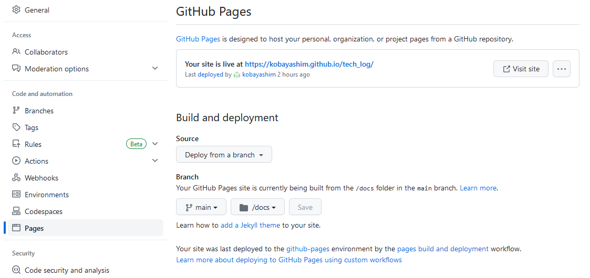

Sphinx¶
Sphinxの導入¶
前提条件¶
ここでは Windows 上での使用を前提としている。macOS や Linux の場合は適宜読み替えを実施すること。
また作成した文章は Github Pages での公開を前提としている。
Python3のインストール¶
Python3 が導入済みであることを前提としている。
導入済みかはターミナルから
[PowerShell on Windows]
# pythonのバージョン確認
> python -V
を実施し、3系のバージョン番号が返ってくればインストール済みとなる。
未インストールの場合は 公式サイト からインストーラーを取得し、実行する。
複数プロジェクト等により複数のバージョンが混在する場合は こちらのサイト を参照して切り替える。
プロジェクトフォルダに移動¶
Github Pages での公開を前提としているため、管理するリポジトリからあらかじめcloneをしておく。
以下の手順ではcloneしたローカルリポジトリ直下をカレントディレクトリとする。
Sphinxのインストール¶
[PowerShell on Windows]
# Sphinxのインストール
> pip install sphinx
クイックスタート¶
[PowerShell on Windows]
# クイックスタートの実施
> sphinx-quickstart
を実施し、プロジェクトを初期化する。
途中の選択肢は以下の選択する。
Separate source and build directories (y/n) [n]: y
Project name: プロジェクトの名称
Author name(s): 作者名
Project release []: 0.0.1 (任意でよい)
Project language [en]: jp
テーマの変更¶
ここではデフォルトのテーマから「Cloud」テーマに変更する手順を記す。
テーマは個人の好みであるため、変更しなくてもよいし別のテーマとしてもよい。
テーマのインストール¶
[PowerShell on Windows]
# テーマのインストール
> pip install cloud-sptheme
copy.pyの書き換え¶
./souce/copy.py を以下の様に書き換える
- html_theme = 'alabaster'
+ html_theme = 'cloud'
Markdownの有効化¶
ReSTだけではなく、Markdownでも記述可能とする。
プラグインインストール¶
[PowerShell on Windows]
# プラグインのインストール
> pip install myst_parser
copy.pyの書き換え¶
./souce/copy.py を以下の様に書き換える
- extensions = []
+ extensions = ['myst_parser']
+
+ source_suffix = {
+ '.rst': 'restructuredtext',
+ '.md': 'markdown',
+ }
Github Pages対応¶
Github Pagesに対応するため、HTMLの出力先を ./build/html から ./docs に変更し、CSS等のファイルのdocs以下のフォルダに配置するように設定の変更を実施する。
copy.pyの書き換え¶
./souce/copy.py を以下の様に書き換える
- extensions = ['myst_parser']
+ extensions = ['myst_parser', 'sphinx.ext.githubpages']
make.batの書き換え¶
./make.bat を以下の様に書き換える
if "%1" == "" goto help
+ if "%1" == "html" goto html
%SPHINXBUILD% -M %1 %SOURCEDIR% %BUILDDIR% %SPHINXOPTS% %O%
goto end
+ :html
+ %SPHINXBUILD% -b html %SOURCEDIR% "docs" %SPHINXOPTS% %O%
+ goto end
+
:help
%SPHINXBUILD% -M help %SOURCEDIR% %BUILDDIR% %SPHINXOPTS% %O%
macOSやLinuxの場合は ./Makefile に同様の処理を加える。
Githubの設定変更¶
Githubのプロジェクトページに行き、「Setting」->「Pages」と遷移し、
Source を「Deploy from a branch」に、
Branch を「main」「docs」にそれぞれ変更する。

ビルド¶
[PowerShell on Windows]
# HTMLの生成
> .\make.bat html
参考¶
Sphinx
sphinxでドキュメント作成からWeb公開までをやってみた
SphinxとGitHub Pagesで技術ノートを公開しよう！